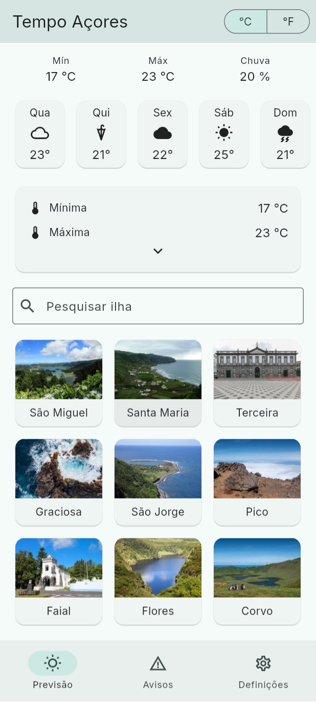
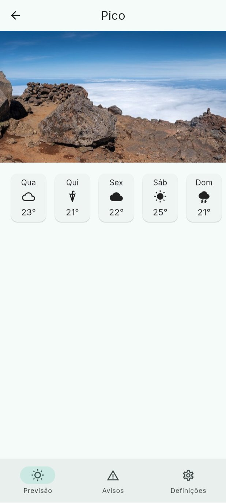
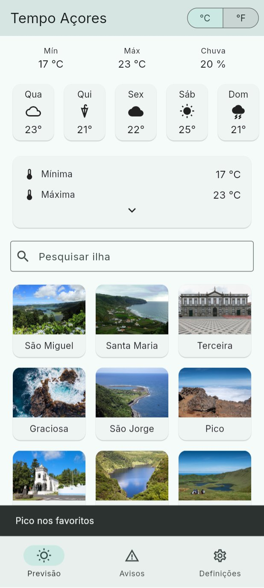
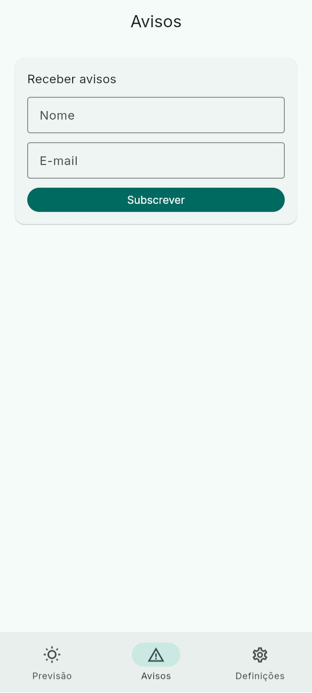
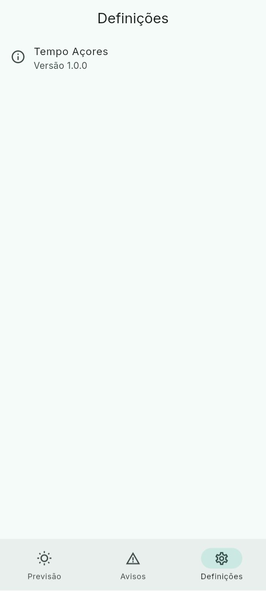

Aula 09 · Semana 5 · Quarta, 7 de outubro de 2026 · 16:00 às 18:00
Teoria: os ecrãs de uma app organizados numa pilha, o efeito do "voltar" no estado, e as rotas declaradas como URLs. Prática, na app das ilhas: abrir uma ilha e devolver um resultado, rotas com go_router e uma barra com três separadores.
Na última aula ficou por fazer a validação do formulário de avisos. É curto e fecha o tema do estado.
cd pdm-aula-08
git stash -u
git checkout passo-3
flutter pub getlib/alerts_form.dart e segue o slide do passo 4 da aula 8: um validator no nome e outro no e-mail, autovalidateMode no Form e o teclado de e-mail.SnackBar; com "Ana" e "ana@uac.pt" mostra "Avisos enviados para ana@uac.pt".validator devolve '' (uma string vazia) quando o campo está bem. O formulário passa?push e pop fazem ao estado, e como Android e iOS tratam o "voltar".Navigator e com go_router, passando um id e devolvendo um resultado.

true. A seta fecha sem devolver nada.

É o que fazes nos passos 1 e 2: primeiro com Navigator.push, depois com o go_router e o caminho /island/pico. Na app, os dois passos ficam iguais.
Previsão: o Pico abre por cima da grelha e a barra continua lá.

3Avisos: o formulário da aula 8, agora num separador. Voltas a Previsão e o Pico ainda está aberto.

3Definições: por agora só a versão; vai ganhar opções nas próximas aulas.
A barra de baixo é o passo 3 (NavigationBar com StatefulShellRoute): cada separador guarda a sua pilha.
push põe um ecrã novo em cima, pop tira o de cima e volta ao anterior. A grelha das ilhas → o Pico → o mapa: três ecrãs na pilha.State, o scroll e o texto escrito. Ao fazer pop, está exatamente como o deixaste.pop é destruído: dispose corre e o estado perde-se. Se o utilizador precisa do que lá estava, tens de o devolver ao ecrã anterior ou guardá-lo fora.pop(context, true) quando tocas na estrela, e quem o abriu recebe o true no await.Para os testes: push mantém o ecrã anterior vivo; pop destrói o ecrã atual e pode devolver um valor.
push põe uma folha por cima; pop tira a de cima e deita-a fora. A folha de baixo continua na mesa com tudo o que tinha escrito. O botão de retroceder do Android é um pop.PopScope.MaterialPageRoute no iOS.PopScope com canPop: false e um diálogo "Descartar alterações?" é o padrão. Gmail faz isto com rascunhos.Para os testes: o "voltar" é do sistema, não da app; a app pode intercetá-lo com PopScope, mas não pode ignorá-lo.
| Padrão | Como se comporta | Exemplo |
|---|---|---|
| Lista → detalhe | push do detalhe; pop volta à lista no mesmo sítio do scroll | Qualquer app de e-mail, a nossa grelha das ilhas |
| Tabs com pilhas independentes | Cada separador tem a sua pilha; mudar de separador não destrói a pilha do outro; voltar a tocar no separador ativo volta à raiz | Instagram, YouTube: abres um vídeo em Início, vais a Subscrições, voltas e o vídeo ainda lá está |
| Modal | Ecrã inteiro que sobe de baixo, com "Cancelar" e "Guardar"; ao fechar, volta ao ponto de partida | Criar evento no Calendário, compor e-mail |
| Bottom sheet | Painel que ocupa parte do ecrã, o resto fica visível e escurecido; arrasta para fechar | Partilhar, filtros do Airbnb, opções de um item |
| Diálogo | Interrompe com uma pergunta curta e duas ações no máximo | "Apagar conversa?", pedidos de permissão |
Navigator.push): dizes o que fazer, ecrã a ecrã. Simples, mas a pilha só existe em memória: não tem nome, não se pode partilhar nem restaurar.go_router): declaras um mapa de rotas com caminhos, como num site: /, /island/:id, /settings. Navegar é mudar o URL; a pilha é derivada dele./island/pico; um teste automatizado começa num ecrã sem tocar em cinco botões.go_router é mantido pela equipa do Flutter, trata do botão de retroceder, dos separadores com pilhas independentes e dos redirecionamentos (ecrã de login).showDialog e showModalBottomSheet (imperativos) dentro de uma app com go_router.Para os testes: rotas declarativas descrevem os ecrãs como URLs e derivam a pilha do URL; são a base de deep links e da web.
Um deep link é um URL que abre a app diretamente num ecrã específico, em vez de no ecrã inicial.
https://tempoacores.pt/island/pico num SMS, numa notificação ou no browser: se a app estiver instalada, abre no ecrã do Pico; se não, abre o site.go_router, o URL recebido é tratado exatamente como context.go('/island/pico'). É por isso que o caminho das rotas deve ser desenhado como se fosse público./island/pico) são o número e a porta.git clone https://github.com/Tiago-Rocha/pdm-aula-09.git
cd pdm-aula-09
flutter pub getpdm-aula-09 no VS Code. É a app do fim da aula 8, com o formulário já validado, mais três ecrãs ainda por ligar: lib/island_screen.dart (uma ilha), lib/alerts_screen.dart (o formulário de avisos, que saiu do ecrã principal) e lib/settings_screen.dart (definições). Trabalhas nos comentários TODO 1 a TODO 3.O go_router já está no pubspec.yaml: o flutter pub get trata dele. Hoje o Chrome tem uma vantagem: a partir do passo 2 vês o caminho de cada ecrã na barra de endereço.
IconButton(
icon: const Icon(Icons.star_border),
tooltip: 'Adicionar aos favoritos',
onPressed: () => Navigator.pop(context, true), // close, return true
),Navigator.push põe um ecrã novo em cima da pilha e devolve um Future: completa quando esse ecrã sair. O valor do pop é o resultado.AppBar, o botão de retroceder ou o gesto do iOS, o resultado é null. Por isso se testa favorite == true.MaterialPageRoute dá a transição de cada plataforma e o gesto de voltar no iOS. A seta da AppBar aparece sozinha quando há um ecrã por baixo.await, o widget pode já não existir. context.mounted confirma que ainda existe antes de usar o context; o lint use_build_context_synchronously avisa se te esqueceres.favorite? E a pesquisa que tinhas escrito na grelha, ainda lá está?return Card(
clipBehavior: Clip.antiAlias,
child: InkWell(
onTap: () async {
final favorite = await Navigator.push<bool>(
context,
MaterialPageRoute(builder: (_) => IslandScreen(id: island.id)),
);
if (favorite == true && context.mounted) {
// the card may be gone
ScaffoldMessenger.of(context).showSnackBar(
SnackBar(content: Text('...')),
);
}
},
child: Column(
// a Column de antes, como está
),
),
);island_card.dart, embrulha a Column num InkWell com este onTap (importa o island_screen.dart) e escreve a mensagem do SnackBar no lugar do '...': o nome da ilha seguido de "nos favoritos". Em island_screen.dart, troca o onPressed: () {} da estrela pelo Navigator.pop do slide anterior.Na app: tocar no Pico abre o ecrã do Pico, com a foto e os cinco dias; a seta volta à grelha sem mensagem; a estrela volta à grelha e mostra "Pico nos favoritos".
import 'package:go_router/go_router.dart';
import 'forecast_screen.dart';
import 'island_screen.dart';
/// Every screen of the app, with its path, like the pages of a site.
final router = GoRouter(
initialLocation: '/',
routes: [
GoRoute(
path: '/',
builder: (context, state) => const ForecastScreen(),
routes: [
GoRoute(
path: 'island/:id', // /island/pico
builder: (context, state) =>
IslandScreen(id: state.pathParameters['id']!),
),
],
),
],
);GoRoute liga um caminho a um ecrã. :id é um parâmetro: em /island/pico, state.pathParameters['id'] vale 'pico'.island/:id está dentro da rota /: abrir /island/pico põe a grelha por baixo e o Pico por cima, mesmo quando se entra diretamente por um link. A seta de voltar funciona.context.push('/island/pico') empilha por cima e devolve um resultado, como o Navigator.push. context.go('/island/pico') substitui a pilha pela do caminho. Para "abrir e voltar", push.id da ilha e não a Island inteira?git stash -u
git checkout passo-1
flutter pub getreturn MaterialApp.router(
title: 'Tempo Açores',
theme: ThemeData(
// o tema, como está
),
routerConfig: router,
);final favorite = await context.push<bool>('/island/${island.id}');router.dart do slide anterior. No main.dart, MaterialApp passa a MaterialApp.router, o home: sai e entra o routerConfig. No IslandCard, o Navigator.push com o MaterialPageRoute dá lugar a uma linha com context.push. Acerta os import.Na app: tudo igual ao passo 1, e é esse o objetivo. No Chrome, ao abrir o Pico a barra de endereço mostra /island/pico; escrever /island/flores abre as Flores com a grelha por baixo.
StatefulShellRoute.indexedStack(
builder: (context, state, shell) => Scaffold(
body: shell, // the current tab, with its own stack
bottomNavigationBar: NavigationBar(
selectedIndex: shell.currentIndex,
onDestinationSelected: (i) =>
shell.goBranch(i, initialLocation: i == shell.currentIndex),
destinations: const [
NavigationDestination(
icon: Icon(Icons.wb_sunny_outlined),
label: 'Previsão',
),
// e Avisos (Icons.warning_amber), Definições (Icons.settings_outlined)
],
),
),
branches: [
// um StatefulShellBranch por separador
],
),StatefulShellRoute desenha um Scaffold comum à volta de todos os separadores, com a NavigationBar em baixo. O shell é o separador atual.StatefulShellBranch é um separador com a sua pilha. indexedStack mantém os três vivos: mudar de separador não faz pop. É o padrão do Instagram.i == shell.currentIndex) volta à raiz desse separador. É o que os utilizadores esperam.NavigationBar é a do Material 3; BottomNavigationBar é a antiga. Três a cinco destinos, com ícone e etiqueta.Scaffold com a sua AppBar, e o shell tem outro Scaffold com a barra. Dois Scaffold um dentro do outro: é um erro?git stash -u
git checkout passo-2
flutter pub getbranches: [
StatefulShellBranch(
routes: [
GoRoute(
path: '/',
// a rota / do passo 2, com a filha island/:id
),
],
),
StatefulShellBranch(
routes: [
GoRoute(
path: '/alerts',
builder: (context, state) => const AlertsScreen(),
),
],
),
// e o terceiro: '/settings' com o SettingsScreen
],router.dart, a lista routes do GoRouter passa a ter um só elemento: o StatefulShellRoute.indexedStack do slide anterior. A rota / do passo 2 entra inteira no primeiro StatefulShellBranch; faz os outros dois. Importa o material.dart, o alerts_screen.dart e o settings_screen.dart.Na app: uma barra em baixo com Previsão, Avisos e Definições. Abres o Pico, vais a Avisos, voltas a Previsão: o Pico continua aberto. Tocas outra vez em Previsão e voltas à grelha.
IslandCard abre o IslandScreen com Navigator.push e espera o resultado; a estrela devolve true com Navigator.pop (passo 1).router.dart com GoRouter: / e /island/:id, MaterialApp.router e context.push pelo caminho (passo 2).StatefulShellRoute.indexedStack com a NavigationBar: três separadores, cada um com a sua pilha (passo 3).O branch passo-3 é o estado final: compara o teu código com ele.
passo-3: git stash -u e depois git checkout passo-3.StatefulShellRoute, com exemplos.